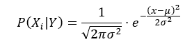

Naive Bayes
Naive Bayes adalah algoritma klasifikasi berbasis Teorema Bayes
dengan asumsi bahwa fitur-fitur dalam data bersifat independen satu sama
lain (asumsi naïf). Algoritma ini sering digunakan untuk klasifikasi
teks, seperti spam filtering dan analisis sentimen.
Contoh aplikasi Naive Bayes adalah:
- Prediksi cuaca
- Analisis sentimen teks
- Klasifikasi email span dan bukan spam
Naive Bayes didasarkan pada terema Bayes: 
Penjelasan:
- 𝑃(𝑌|𝑋): Probabilitas posterior (kelas 𝑌 diberikan fitur 𝑋).
- 𝑃(𝑋|𝑌): Likelihood (probabilitas fitur𝑋 diberikan kelas 𝑌).
- 𝑃(𝑌): Prior probability (probabilitas awal kelas 𝑌).
- 𝑃(𝑋): Evidence (probabilitas fitur 𝑋 secara keseluruhan).
Tujuan nya yaitu untuk mencari kelas Y dengan nilai 𝑃(𝑌|𝑋)
tertinggi
Jenis Naive Bayes
- Gaussian Naïve Bayes (untuk data numerik, menggunakan distribusi
normal).
- Multinomial Naïve Bayes (untuk data kategori, seperti klasifikasi
teks).
- Bernoulli Naïve Bayes (untuk fitur biner, misalnya kata ada/tidak
dalam teks).
Kelebihan Naive Bayes
- Sederhana dan mudah diimplementasikan.
- Cepat dan efisien untuk dataset besar.
- Cocok untuk data dengan banyak fitur.
Kekurangan Naive Bayes
- Asumsi independensi fitur seringkali tidak realistis.
- Performa menurun jika fitur saling bergantung.
- Memerlukan penanganan khusus untuk data dengan probabilitas
nol.
Membandingkan Data Iris tanpa outlier dan dengan outlier menggunakan
naive bayes
Proses perhitungan ini saya lakukan didalam microsoft excel Perhitungan dalam excel
Pertama kita harus menentukan tipe data dari data iris yang kita
gunakan. Pada percobaan ini tipe data adalah numerik. Pada dataset
dengan outlier ada total 150 data dengan 3 clas yang masing masing ada
50 data. Sementara tanpa outlier ada total 142 data dengan jumlah class
seotsa = 47, versicolor = 49, virginica = 46.
Hitung Probabilitas setiap class, yaitu dengan membagikan total
data dengan jumlah kelas. Hasil perhitungan dengan outlier adalah
sebagai berikut Setosa = 0,333333333 Veersicolor = 0,333333333 virginica
= 0,333333333
Sementara tanpa outlier adalah sebagai berikut Setosa = 0,330985915
Veersicolor = 0,345070423 virginica = 0,323943662
Kemudian hitung mean dan Varians. Untuk menghitung means di excel
kita menggunakan rumus AVERAGE dan untuk menghitung varians kita
menggunakan rumus VAR.P
Selanjutnya lakukan prediksi email baru. Kita dapat menggunakan
rumus Gausian untuk menghitungnya.  P(X|Y) = merupakan inputan acakan untuk
menghitung
dalam excel kita dapat menggunakan:
langkah selanjutnya kita akan menggabungkan dengan rumus teorema
bayes atau dalam
excel kita melakukan perkalian
=[probabilitas]*[predeiksi
email baru tiap class]
Terakhir untuk memprediksi kelas kita akan memilih dengan nilai
𝑃(𝑌|𝑋) tertinggi.
Dari hasil perbandingan saya data iris dengan outlier didapatkan
hasil terbesar yaitu class stosa dengan nilai = 0,0000000131 Sementara
data iris dengan tanpa outlier diperoleh hasil terbesar yaitu class
stosa dengan nilai = 0,0000000000650